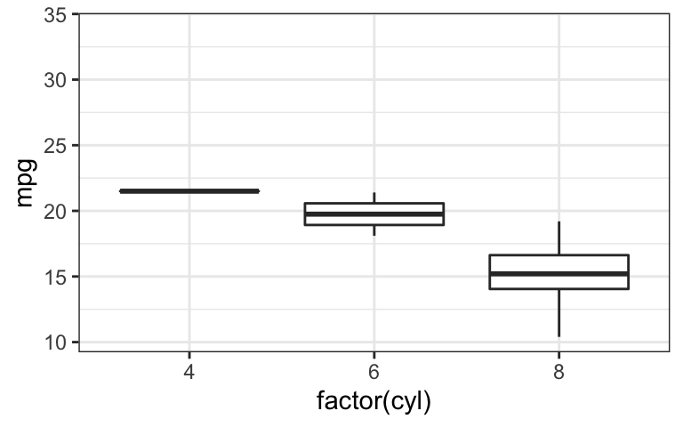
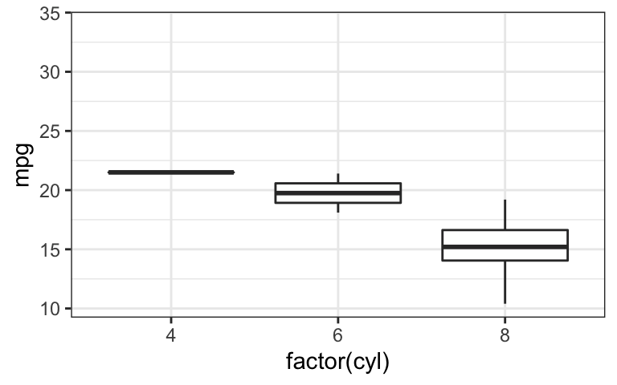
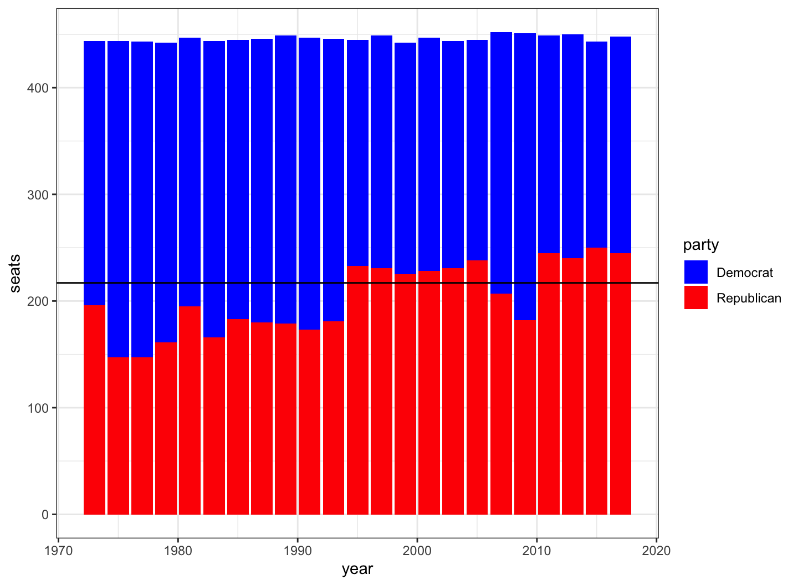
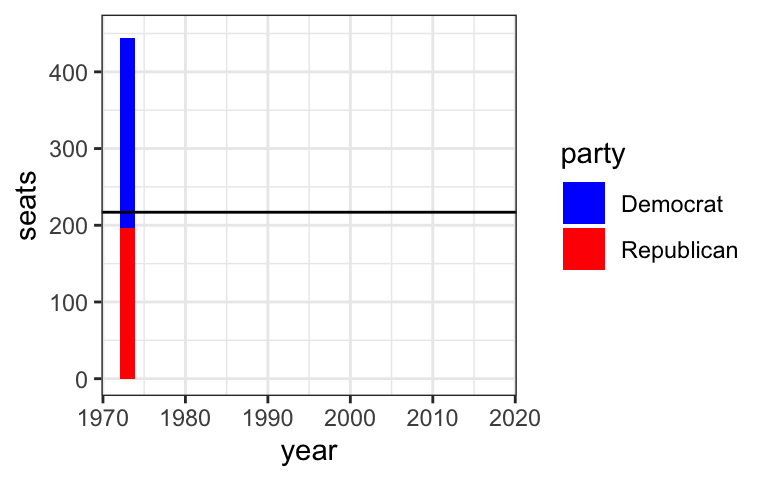
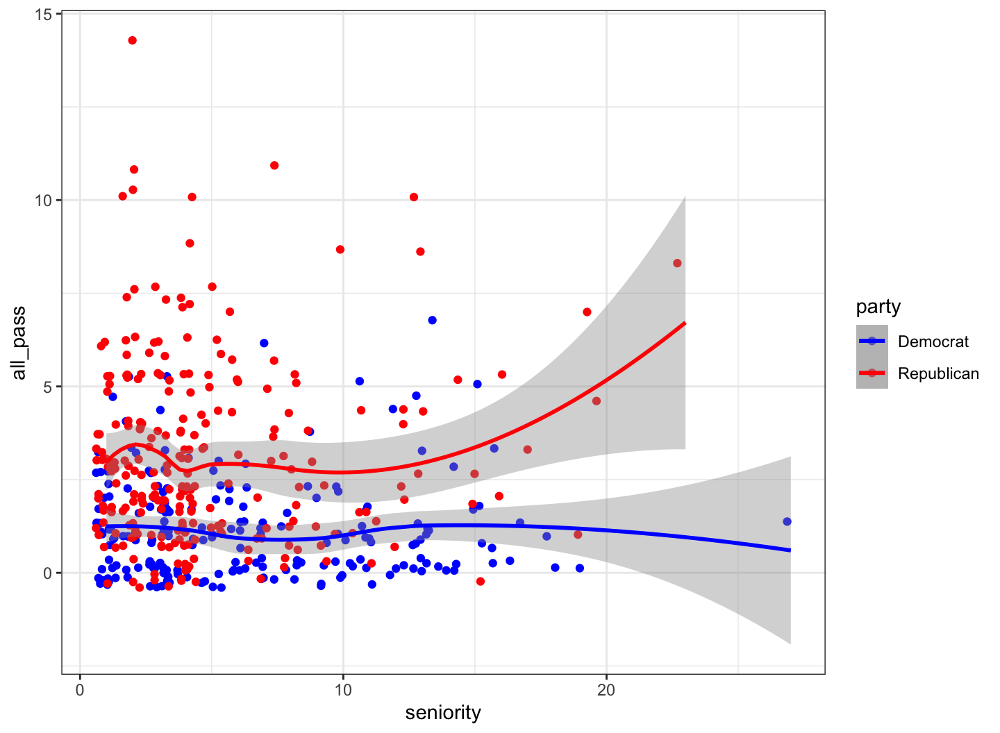

March 24, 2022
# install.packages("gganimate")
# install.packages("plotly")
# install.packages("gifski") # for PCs.
# install.packages("transformr") # for manipulating polygons and paths
# install.packages("magick") # for animation rendering
# install.packages("htmltools") # for html rendering
library(tidyverse)
library(plotly)
library(gganimate)
library(gifski)
library(transformr)
library(magick)
library(htmltools)
theme_set(theme_bw())
data(mtcars)
p <- ggplot(data = mtcars,
mapping = aes(x = factor(cyl), y = mpg)) +
geom_boxplot()
p
p + facet_wrap(~gear)
gganimate turn our ggplot visualizations into moving images.
my_anim <- p + transition_states(gear) my_anim

transition_states() is intended to use primarily with categorical variables.
transition_length and state_length arguments.my_anim2 <- p +
transition_states(gear,
transition_length = 3, # relative length
state_length = 2) # relative length
my_anim2

Cooperative Congressional Election Survey (CCES) is a 50,000+ person national stratified sample survey.
We can use recode() to create a new variable corresponding to other factor variable.
Here we summarize the number of Democrats and Republicans in a series of years.
There are usually 435 seats in total in the House of Representatives.
cces <- read_csv(url("https://bcdanl.github.io/data/cces.csv"))
cces <- cces %>%
mutate(party = recode(dem,`1`="Democrat",`0`="Republican"))
cong_dat <- cces %>%
group_by(year, party) %>%
summarise( seats =n())
p <- ggplot(cong_dat,
aes(x = year, y= seats,
fill = party)) +
geom_bar(stat="identity") +
geom_hline(yintercept = 217) + # threshold for having a majority of seats in the house.
scale_fill_manual(values=c("blue","red"))
p

transition_time() is intended for time-series data like hours, minutes, days, weeks months, years, etc.anim2 <- p + transition_time(year) anim2

Let’s consider a scatter plot of seniority against all_pass.
Variable seniority is about how long a member has been in Congress.
Variable all_pass is about how many bills a member passed
p <- ggplot() + geom_jitter(data = filter(cces,
congress==115 & party=="Democrat"),
aes(x = seniority, y = all_pass,
color = party) ) +
geom_jitter(data = filter(cces,
congress==115 & party=="Republican"),
aes(x = seniority, y = all_pass,
color = party) ) +
geom_smooth(data = filter(cces,
congress==115 & party=="Democrat"),
aes(x = seniority, y = all_pass,
color = party) ) +
geom_smooth(data = filter(cces,
congress==115 & party=="Republican"),
aes(x = seniority, y = all_pass,
color = party) ) +
scale_color_manual(values=c("blue","red"))
p

transition_layers() allow for building up a plot layer by layer with an animation.anim2 <- p + transition_layers() anim2
enter_*() and exit_*() allow for controlling the entering and exiting in gganimate.
*_fade() will set the alpha value to zero making the elements fade in/out during the transition.anim <- ggplot(mtcars, aes(factor(cyl), mpg)) + geom_boxplot() + transition_states(factor(cyl)) # Fade-in, fade-out anim1 <- anim + enter_fade() + exit_fade() anim1
shadow_*() allows you to retain previous or preview future frames of the animation.
shadow_wake() shows preceding frames with gradual falloff.
alpha is for transparency modification of the wake.wrap should the shadow wrap around, so that the first frame will get shadows from the end of the animation.There are also shadow_mark(), shadow_null(), and shadow_trail().
p <- ggplot(cong_dat,
aes(x = year, y = seats, fill = party)) +
geom_bar(stat = "identity") +
geom_hline(yintercept = 217) +
scale_fill_manual(values = c("blue","red"))
anim3 <- p + transition_time(year) +
shadow_wake(wake_length = 1,
alpha = FALSE,
wrap = FALSE)
anim3
p <- ggplot(cong_dat,
aes(x = year, y = seats, fill = party)) +
geom_bar(stat = "identity") +
geom_hline(yintercept = 217) +
scale_fill_manual(values = c("blue","red"))
anim3 <- p + transition_time(year) +
shadow_wake(wake_length = 1,
alpha = FALSE,
wrap = FALSE)
anim3
anim_save() saves saves the animation object as a *.gif file.anim_save("test.gif", animation = anim3)
plotly is an alternative to ggplot with a relatively easy to learn syntax for generating many of the same kinds of plots.
plotly is mainly for the interactive figures of visualization.
We will focus only on plotly::ggplotly().
ggplotly() interacts with ggplot figures to make those figures interactive.
# Make some noisily increasing data
dat <- data.frame(cond = rep(c("A", "B"), each = 10),
xvar = 1:20 + rnorm(20, sd=3),
yvar = 1:20 + rnorm(20, sd=3))
p <- ggplot(dat, aes(x = xvar, y = yvar)) +
geom_point(shape=1) # Use hollow circles
fig <- ggplotly(p)
fig
Like gganimate, plotly can animate ggplot figures by creating frames of the animation based on some value in your data.
Consider the static relationship between seniority and legislative effectiveness using CCES data.
les is a score for legislative effectiveness.p <- ggplot(cces, aes(x = seniority, y = les,
color = party))+
geom_point()+
scale_color_manual(values=c("blue","red")) +
labs(x = "Seniority", y = "Leg. Effectiveness")
p
Now consider the dynamic relationship between seniority and legislative effectiveness using CCES data.
frame parameter in the aes() function animates the figure.p <- ggplot(cces, aes(x = seniority, y = les,
color = party,
frame = year) ) + #this animates the figure
geom_point()+
scale_color_manual(values = c("blue","red")) +
labs(x = "Seniority", y = "Leg. Effectiveness")
p1 <- ggplotly(p)
p1
Now consider the dynamic relationship between seniority and legislative effectiveness using CCES data.
ids parameter in the aes()function smooths out the figure by adding the object constancy to the figure.
ids causes points to move from their points in the previous frame rather than being redrawn from scratch every single time.p <- ggplot(cces, aes(x = seniority, y = les,
color = party,
frame = year,
ids = thomas_name) ) + # this adds the object constancy
geom_point()+
scale_color_manual(values = c("blue","red")) +
labs(x = "Seniority", y = "Leg. Effectiveness")
p1 <- ggplotly(p)
p1
htmlwidgets::saveWidget() saves the ggplotly object as an *.html file.htmlwidgets::saveWidget(p1, "fig.html")